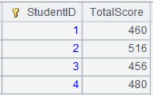
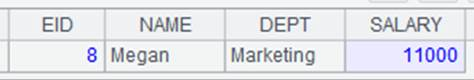

Description:
Create an index file for an entity table or a multi-zone composite table.
Syntax:
T.index(I:h,w;C,…;F,…)
Note:
The function creates index I for records meeting filtering condition w, which can be absent, in entity table or multi-zone composite table T according to keys C,…, which should not the field(s) inheriting from the parent table. It creates an index for each zone table when parameter T is a multi-zone composite table.
Create a hash index with the average length as h if parameter h is present. The key(s) C,… and index name I are indispensable for creating the index. The index name should be unique, and an index file with the unique name will be automatically generated when the index creation is successfully executed.
The function deletes the corresponding index when there is only one parameter I; delete all indexes of T if all parameters are absent. A hash index can be only used for performing equivalence query and supports the contain syntax.
Parameter F is the field name in the entity table or multi-zone composite table. When it is present, record the field into the index file. We can only get the indexed fields C and F field when using the index to retrieve records. The greatest aspect of such an index is that we can quickly find values of F field through values of C. If parameter F is absent, the index will record the location information of all the fields in the entity table.
Parameters:
|
T |
An entity table or multi-zone composite table |
|
I |
Index name |
|
w |
Filtering condition; retrieve the whose set if the parameter is absent |
|
C |
The field for which an index is created |
|
h |
Index length |
|
F |
Field name in an entity table; can be omitted |
Options:
|
@2 |
Auto-load and maintain the second-level index when only parameter I is present |
|
@3 |
Auto-load and maintain the third-level index when only parameter I is present |
|
@0 |
Close the index to release resources when only parameter I is present |
|
@w |
Create a full-table index based on a certain column and support like(“*X*”) style search |
Return value:
An entity table or multi-zone composite table
Example:
|
|
A |
|
|
1 |
=file("emp1.ctx") |
|
|
2 |
=A1.create(#EID,NAME) |
Create base table for A1’s composite table |
|
3 |
=demo.cursor("select EID,NAME from employee where EID< 10") |
|
|
4 |
=A2.append(A3) |
Append records of A3’s cursor to the base table |
|
5 |
=A2.attach(table1,DEPT,GENDER) |
Add attached table table1 to the base table |
|
6 |
=demo.cursor("select EID,DEPT,GENDER from employee where EID< 10") |
|
|
7 |
=A5.append(A6) |
Append records of A6’s cursor to attached table table1 |
|
8 |
=A7.index(test_index1,GENDER=="F";DEPT;) |
Create index test_index1 on DEPT field; the index file name is emp1.ctx_table1_test_index1 |
|
9 |
=A5.index(test_index3,["F"].contain(GENDER);DEPT;) |
Use contain syntax to create index test_index3 on DEPT field; the index file name is emp1.ctx_table1_test_index3 |
|
10 |
=A5.index(idx1:10;DEPT;) |
Create index idx1 with the length of 10 using DEPT field; the index file name is emp1.ctx_table1_idx1 |
|
11 |
=A5.index(test_index3) |
Delete index test_index3 |
|
12 |
=A5.index() |
Delete all indexes |
|
13 |
=A5.index(test_index,GENDER=="F";DEPT;GENDER) |
Parameter F is present, and only indexed field DEPT and GENDER field can be retrieved through the index |
|
14 |
=A7.index@w(test_index4,GENDER=="F";DEPT;) |
Create a full-text index according to DEPT field |
|
15 |
=A14.icursor (;like(DEPT,"*ale*"),test_index).fetch() |
Use like(“*X*”) style query  |
|
16 |
=A5.index@2(test_index3) |
Auto-load and maintain the second-level index |
|
17 |
=A5.index@3(test_index3) |
Auto-load and maintain the third-level index |
|
18 |
=A5.index@0(test_index3) |
Release the index |
Ø When T is a multi-zone composite table:
|
|
A |
|
|
1 |
=file("test.ctx":[1,2,3]) |
|
|
2 |
=A1.create@y(#EID,NAME,GENDER,DEPT;EID%3+1) |
Generate a multi-zone composite table |
|
3 |
=connect("demo").cursor("select EID,NAME,GENDER,DEPT,GENDER from employee") |
Return a cursor |
|
4 |
=A2.append@x(A3) |
Append records of A3’s cursor to A2’s multi-zone composite table |
|
5 |
=A4.index(test_index4,GENDER=="F";DEPT;) |
Create an index for each zone table  |